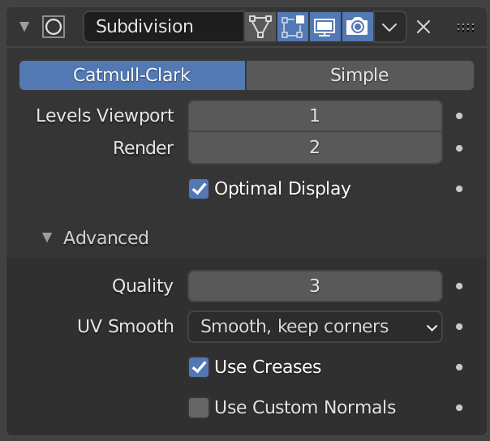

Lesson 5: Bevel and smooth
Goal: Round hard edges with Bevel, then smooth the whole model with a Subdivision Surface modifier. Then build a rounded coaster.
Two tools that make models look finished
- Bevel (in Edit Mode): rounds an edge into a small slope.
- Subdivision Surface (a modifier): smooths the whole model. Your original shape stays the same. Only the look changes.

Image: Blender Manual by the Blender Documentation Team, licensed under CC BY-SA 4.0. Shared unchanged.
Modifier panel: select the object, then open the Modifier tab (the wrench icon) in the Properties panel on the right. unverified icon location in 5.2
Steps
- Tool Select a cube and press Tab for Edit Mode.
- Key Press 2 for edge select.
- Mouse Click one edge. It turns orange.
- Key Press Ctrl + B. Move the mouse slightly and click. Ctrl+B unverified on Mac
- Check The edge now has a narrow slope instead of a sharp corner.
- Key Press Tab to return to Object Mode.
- Open the Modifier tab (wrench). Click Add Modifier, then Generate > Subdivision Surface. unverified menu names
- Key In the modifier, set Levels Viewport to 2.
- Check The cube looks soft and rounded, but the outline still matches the original shape.
- Key Save with Cmd + S.
Project: rounded coaster
A flat disc with rounded edges. Colors are your choice later.
- Tool Add a cylinder: Shift + A, then Mesh > Cylinder.
- In the Adjust Last Operation panel (bottom left), set Vertices to 32 and Radius to 1. panel name unverified
- Key Press S, Z, type 0.15, Enter. It becomes flat.
- Key Press Tab, then 2 for edge select.
- Key Press A to select all edges.
- Key Press Ctrl + B, move slightly, click to round the edges.
- Key Press Tab. Add a Subdivision Surface modifier and set Levels Viewport to 2.
- Key Save as
coaster.blendwith Cmd + S.
You are done when: